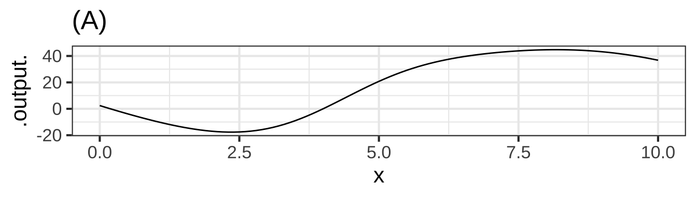

27 Iteration and accumulation
Let’s review the concept of an Euler step.
Problem statement:
- You seek to find a function, e.g. \(f(t)\) which you do not yet know.
- You already know \(\partial_t f(t)\). (In the following chapters we’ll show you some of the many instances of this unlikely-sounding situation, where you don’t know \(f(t)\) but you do know \(\partial_t f(t)\).) This relationship, \(\partial_t f(t) \longrightarrow f(t)\) is, of course, revealed by anti-differentiation.
 3300
3300
Setup:
- You know or make up a value for \(f(t)\) at a particular time of interest \(t=t_0\). “Making up” is a perfectly legitimate practice here to get started in creating an an anti-derivative. The reason is hard to explain until you see the whole process of anti-differentiation by the Euler method, so hang on. In the population modeling problem in Chapter 26, we were interested in forecasting the population into the future, so we chose \(t_0\) to be the most recent year for which we have information: \(t_0 = 2020\). (In polite mathematical conversation, “making up” is pronounced “assuming.”)
- Consider a quantity \(h\) which is to be regarded as a little bit of \(t\): they have the same dimension. \(h\) should be “small,” but “small” compared to what? Often, the modeling problem at hand involves a domain of interest. For instance, the population modeling problem in Chapter 26 involved a forecast over the time interval from year 2020 to 2100. Provisionally, take small to mean 1% or 0.1% of the extent of the domain of interest. (In the population modeling problem, we chose \(h=1\) year.) 3305
The Step
- Compute the value of the (still unknown) function \(f(t)\) at input \(t_0 + h\) as \[f(t_0+h) = f(t_0) + h \times \partial_t f(t)\]
Now you know a little bit more about \(f(t)\), namely, its value at \(t_0 + h\).
Since the original problem was to figure out \(f(t)\) over some domain of interest (starting at \(t=t_0\)), we are not finished. We have taken but one step of our journey and have many more to go.
To continue on the journey, we take what we just found out, namely \(f(t_0 + h)\). We use this as the starting point in a new step. We don’t have to make anything up because we already know \(f(t_0 + h)\). 3310
The second step brings us to \(f(t_0 + 2h)\)
\[f(t_0+2h) = f(t_0+h) + h \times \partial_t f(t+h)\] And the third: \[f(t_0+3h) = f(t_0+2h) + h \times \partial_t f(t+2h)\]
How long to continue this step-by-step process? The original problem involved some domain of interest, and we selected \(h\) as 1% or 0.1% of the extent of this domain. For \(h\) as 1%, taking 100 steps will get us to the far end of the domain. For \(h\) as 0.1%, we would need to take 1000 steps. 3315
Exercise XX.XX: 9W6VB
Using the Euler method find \(\int f(t) dt\) over the interval \(t_0=0\) to \(t_{end}=1\). The \(t\) quantity is in steps of \(h=0.01\).
| \(t\) | \(\partial_t f(t)\) | \(\int f(t) dt\) |
|---|---|---|
| 0 | 0.399 | 0.5 |
| 0.01 | 0.242 | |
| 0.02 | 0.054 |
27.1 Automating Euler
Although the Euler method was invented in the 18th century, it only became a practicable way of accumulating in the 1930s with the advent of analog computing and then in the 1940s when electronic computing was first becoming available. In those days, a primary mission for computers was accumulating the trajectories of artillery shells, a problem that was inaccessible to symbolic anti-differentiation because of the complexities of air resistence and the varying density of air at different altitudes, with different humidity, and so on. 3320
Nowadays computing is roughly one-billionth the cost that it was the World War II era, and we use computers for just about every task imaginable. But in those early days, the huge costs involved in developing early computers was justified only by the prospect of improved gunnery in war. And those problems were all about accumulation and, more specifically, Euler methods. 3325
What today seems an esoteric use for computers was in fact the prime motivation for their development. This section introduces various ways of programming the Euler method on a computer.
The Euler method has been supplanted by other, more modern methods whose inner workings are based on a deeper knowledge of calculus than we have covered to date and programming methods that automatically check and adapt the size of \(h\). 3330
However sophisticated these methods may be, they are always easy to use. For example, the R/mosaic antiD() operator draws on one of these methods.
27.1.1 Euler as a spreadsheet
Spreadsheets are popular for certain simple kinds of computer programming. The Euler method is a case in point. Figure 27.1 shows the formula layer of a Google Sheet implementing the Euler method for \(\int \dnorm(t) dt\). In the spreadsheet, NORMDIST() is the equivalent of \(\dnorm()\). 3335
](www/Euler-spreadsheet1.png)
Figure 27.1: The formula layer of a spreadsheet implementing the Euler method for \(\int \dnorm(x) dx\). The whole spreadsheet is viewable here
The first argument to NORMDIST() is a reference to a cell in column B which stores the sequence \(t_0\), \(t_0 + h\), \(t_0 + 2h, \ldots\). (The value of \(h\) is stored in cell H2 (not shown).) Column D contains the results of the Euler calculation. It starts at time \(t_0=0\) by referencing cell H4 (not shown) which contains the starting value \(f(t_0)\). Each successive cell in that column refers to the one immediately above that, adding in the appropriate value from the NORMDIST() column and multiplying it by \(h\) (that is, H2). 3340
Only about 10 Euler steps are shown, out of 100 altogether. Typically in viewing a spreadsheet you don’t see the formula layer. Instead, the results of the calculation in each cell are presented. (Figure 27.2). 3345

Figure 27.2: Results from the formula layer shown in Figure 27.1.
Plotting column D against column B gives a graph of \(\int \dnorm(t) dt\) versus \(t\). Notice that the output of the Euler method is a function stored as a table rather than as a function formula. And even though \(\int \dnorm(t) dt\) has a pretty simple form, namely, \(\pnorm(t)\), the spreadsheet makes it look like something more elaborate. 3350
Spreadsheets are rightly criticized for being verbose. This can make it extremely challenging for the human programmer to create a spreadsheet that does what is claimed for it, let alone to demonstrate that the result is correct. 3355
Worse, it’s hard to generalize a spreadsheet to handle any given function rather than the one (here, NORMDIST()) hard-coded into the sheet. A usual practice is to copy a spreadsheet and then customize it to use the function whose anti-derivative is sought. This introduces the potential for human error in a way that can be hard to detect down the line. 3360
27.1.2 Using antiD()
The R/mosaic antiD() operator uses symbolic differentiation if it can. Otherwise it uses numerical methods in the spirit of Euler. Here is the same anti-differentiation as in the spreadsheet but done with antiD(): 3365
It happens that \(\dnorm(t)\) is one of those many functions where the anti-derivative cannot be calculated symbolically. (We already know that \(\int \dnorm(t) dt = \pnorm(t)\), but this in fact the definition of \(\pnorm()\), which is only known from numerical calculations like Euler.) 3370
An advantage of using programming systems like R/mosaic is that they provide a way to do something with the result of the calculation. You could of course plot f() with slice_plot(), but let’s show something much more fundamental … 3375
How do we know that
antiD()is giving the result it should give?
Whenever you do a calculation, you should ask a similar question: “How do I know that [my calculation] is giving the result it should?” In general, it takes considerable experience to provide an answer to such a question, but in the case of antiD(), the approach is simple: If f() is really the anti-derivative of dnorm(), then differentiating f() should give us something that’s the same as dnorm(). 3380
With numerical methods, there will almost always be some error introduced by round-off in the calculations, so we should never expect the deviation to be zero. You can see from the plot of the deviation (Look carefully at the vertical axis!) that it is smaller than 0.0000000001, which is a tiny, tiny part of the size of the output from \(\dnorm()\). 3385
It might seem odd to use 3 lines of R/mosaic commands to confirm an answer that was calculated in one line. That’s a pretty good representation of how much effort a professional will put into testing the result compared to getting the result. 3390
27.1.3 Using cumsum()
antiD() produces a function that can be evaluated at any input. In contrast,
the Euler method as described here produces a data table of values as, for example, seen in the spreadsheet implementation of Euler.
In R, a data table can be created with the data.table() function. Here’ we’ll illustrate how to implement Euler with this format as a topic. The raw ingredients are:
- \(t_0\) and \(t_\text{end}\), the start and end of the input interval over which you want to do the accumulation.
- Your choice of \(h\). We’ll set this to 1/100 of the length of the input interval.
- The function that you want to accumulate. We’ll represent that with a tilde expression in exactly the same manner as
makeFun(),D(), and other operators in the R/mosaic suite of software. We’ll implement the method as a series of steps that make a data table whosetandaccumcolumns describe the accumulated function.3395
The cumsum() function is easy to understand. First, know that sum() adds together a set of numbers. For instance, here’s a data frame with the numbers 0, 1, 2, 3, …, 10. The sum of these is 55. The cumulative sum is also known as the “running sum.” 3400
## [1] 0 1 2 3 4 5 6 7 8 9 10## [1] 55## [1] 0 1 3 6 10 15 21 28 36 45 55Exercise 22.5: 3IU9R
Consider this sequence: 4, 5, 3, 1, 2
Question A What is the sum?
14 ︎✘ 15 ✔︎ Yes, we know you can add. We just wanted you to keep in mind what the sum is for the next question, which is just about as easy. 16 ︎✘ 17 ︎✘
Question B What is the cumulative sum?
- The sequence 4, 9, 12, 13, 15 ✔︎
- The sequence 2, 3, 6, 11, 15 ︎✘ That’s backwards!
- The sequence 0, 4, 9, 13, 15 ︎✘ The first number in the original sequence is 4, so the cumulative sum will start with that.
Question C Which entry in the cumulative sum matches the sum?
- The first ︎✘
- The last ✔︎
- None of them ︎✘
- All of them ︎✘
A good practice with numerical methods is to package them as a function, so that you can easily apply the same method in many different contexts. This is the best way to arrange a calculation so it can be debugged and verified. This is what such a function would look like in R: 3405
Let’s test accumulate(). Since dnorm() is the derivative of pnorm(), accumulating dnorm() should give a function that has the same shape as pnorm().

From the plot, you can see that accumulated version of dnorm() has the same shape as pnorm(). But the two functions are shifted vertically. By how much?

The Euler method gives results that are roughly 0.16 units less than the true answer, pnorm(). Notice that the error is practically the same for all \(t\). This shows that the Euler accumulated dnorm() is practically pnorm(t) - 0.16: a pure vertical shift. (If you look very closely, you’ll see that diff is not exactly a constant. That’s the result of using finite \(h\) in the Euler accumulation.) 3410
Exercise 22.5: 3IUVB
Copy the accumulate() function from Section 27.1.3 into a SANDBOX and make the following plot:

There is a vertical difference between the accumulated points and pnorm().
Question A What happens to this vertical difference if you make \(t_0\) smaller (more negative) than \(-1\)?
- The difference gets smaller. ✔︎
- The difference gets bigger. ︎✘
- The difference stays the same. ︎✘
27.2 Iteration
There is an important computational strategy behind the Euler method, whether it be implemented on a spreadsheet or in R: iteration
“Iteration” means to do something over and over again, or, as defined nicely by the New Oxford American Dictionary:
repetition of a mathematical or computational procedure applied to the result of a previous application
You saw iteration at work in Section 26.2 when we turned the discrete sloping segments of the slope-function visualization into continuous, joined line segments. We started with the right endpoint of segment (a). Then we applied a procedure: change the vertical position of segment (b) so that the left end of (b) joins with the right end of (a). Now repeat that, but starting not with the original segment (a) but the joined (a)-(b) segments: move segment (c) vertically until its left end is joined with the rightmost point of the (a)-(b) segments. This produces a continuous (a)-(b)-(c) structure. Repeat again, using (a)-(b)-(c) and joining (d) to that. And so on. Iteration. 3415
Iteration is behind many of the algorithms used throughout mathematics and computation generally. The fundamental structure of iteration involves three things:
- A set of items over which the iteration is to be performed. Call this the iteration set. Examples of iteration sets: the line segments in the slope-function visualization; the cells in a spreadsheet; the individual numbers in a sequence like 0, 1, 2, 3,
- An object, called the accumulator to hold the result of the accumulation. This might be in the shape of a single number, or it might be a sequence of things, more or less like the set in (1).
- A procedure that takes the accumulator as well as an item from (1) and calculates something, with which to augment the accumulator.
To carry out the iteration, you initialize the accumulator in a way that’s appropriate, then apply the procedure to the first item of the set (1), thereby updating the accumulator. Next, move to the second item in the set (1) and update the accumulator. Repeat this for each of the items in the set (1). When you’ve processed each of those items the accumulator holds the result. 3420
Example 1: Summing a set of numbers.
- The iteration set is those numbers, for instance, 3, 5, -2, 1, 4.
- The accumulator is a single number, which we initialize to 0.
- The procedure takes the item from the iteration set and updates the accumulator by adding that item to the accumulator.
The accumulator starts out as 0. Then 3 is added to it and the accumulator becomes 3. Then 5 is added to it and the accumulator becomes 8. Next, -2 is added to it and the accumulator becomes 6. The 1 in the iteration set updates the accumulator to 7 and, finally, the last item in the iteration set—4—updates the accumulator to 11. The final result: 11. 3425
Let’s look at how this might be written in base R, even though the R/mosaic software allows you to avoid such constructions.
## [1] 11Almost all computer languages have a structure like the for loop in R for carrying out the repetition. Learning how to use such things is a fundamental part of computer programming.
Example 2: The cumulative sum
We’ll use the same iteration set as in the previous example. But the accumulator will have two parts, a running_sum and a set of numbers. As in the summation iteration, we’ll initialize running_sum to zero. The set of numbers will be initialized to the empty set. In addition to updating running_sum, the update procedure will append the running sum to the end of the set of numbers. The process of appending is called concatenation. One of the many ways in R to concatenate the most recent result looks like 3430
set_of_numbers <- c(set_of_numbers, running_sum)In R, the c() function performs the appending. “c” stands for “concatenate.”
Here’s one way to write the cumulative sum operation in R:
## [1] 3 8 6 7 11To experienced programmers, the cumulative-sum iteration code listed above will seem odd. That’s because in learning to program they mastered additional features of the programming language like indexing, which enables you to refer to a specific item in a set. Many, many bugs in programs originate in faulty indexing; it’s not always so easy to do right. 3435
Here’s the cumulative-sum iteration in a way that will seem more familiar to experienced programmers:
## [1] 3 8 6 7 11In programming languages such as Python or C, such a looping style is commonplace. It also works in R, but experienced R programmers know a set of functions such as cumsum() or cumprod() or lapply() that enable the programmer to write iteration operations without explicitly showing the loop. Hiding the loop makes the program much smaller and simpler, for instance, the following does the same accumulation as the loop.
## [1] 3 8 6 7 11Since functions like cumsum() have been carefully debugged and validated by their authors, they are much more reliable than home-brew loops. In addition, they are programmed to run close to the hardware and are therefore very fast. That’s not an issue with an iteration set containing five numbers, but such sets might well be 100,000 times longer, or more. 3440
27.3 Accumulating population change
Let’s return to the prediction of future population to show how it was done. Recall that we started with the total population of the US as estimated by the Census Bureau every ten years from 1790 on.24 3445
Those numbers are monotonically increasing, so a projection into the future based just on those numbers is bound to give an ever-increasing value. Augmenting the data with our understanding of the mechanisms of population growth, and bringing in additional information from other sources—families are getting smaller on average, people are living longer—we decided to process the census numbers to give us a better representation of growth: the annual per-capita population growth. 3450
Writing “annual per-capita population growth” in explicit units gives “change in population per year per person.” We observed from the historical record that this quantity is decreasing over time in a way that’s reasonably extrapolated into the future by a straight-line function. 3455
That part of the quantity which is “change in population per year” has the units of the derivative with respect to time of population: \(\partial_t P(t)\). In other words, the information that we’re taking as informative for predicting future population growth, the extrapolation of the growth rate, has the form of a derivative. We’re going to transform that derivative into the the population function itself \(P(t)\). This is an absolutely typical use of anti-differentiation. 3460
The annual growth rate in population \(\partial_t P(t)\) can be approximated from the once-per-decade data by finite differencing: \[\diff{t} P(\text{year}) = \frac{P(\text{year} + 10) - P(\text{year})}{10}\] The quantity graphed in Figure 26.4 is a little different, it is the population growth rate per capital, that is, population growth rate divided by the population. In terms of derivatives, the quantity we are using for the prediction is the function drawn as a blue line in Figure 26.4 we can directly estimate from the data \(P(t)\) is \[\frac{\partial_t P(t)}{P(t)} = 0.0071 - 0.000120 (t - 2020)\]
Someone who has absolutely mastered the rules of differentiation in Block 2 might recognize that \[\partial_t \ln(P(t)) = \frac{\partial_t P(t)}{P(t)}\] In other words, our modeling of the data has told us the derivative not of \(P(t)\) but of \(\ln(P(t))\). Let’s accumulate that.
The growth rate model is \[\text{Growth rate model:}\ \ \ \partial_t \ln(P(t)) = 0.0071 - 0.000120(t-2020)\]
We’ll start in 2020, when we know \(P(t) = 331\) million, so \(\ln(P(2020)) = 19.618\). According to the growth rate model, for the year to 2021, the growth rate will be \(0.0071 - 0.000120(2021-2020)n= 0.00698\)$ per year. This means that \(\ln(P(2021)) = 19.619 + 0.00698 = 19.6247\). 3465
| Year \(t\) | \(P(t)\) | \(\ln(P(t))\) | \(\partial_t \ln(P(t))\) (from model) |
|---|---|---|---|
| 2020 | 331M | 19.618 | 0.00698 |
| 2021 | 19.625 | 0.00686 | |
| 2022 | 19.632 | 0.00674 | |
| 2023 | 19.639 | 0.00662 | |
| 2024 | 19.645 | 0.00650 | |
| 2025 | 19.652 | 0.00638 | |
| 2026 | 19.658 | 0.00626 | |
| 2027 | 19.664 | 0.00614 | |
| 2028 | 19.670 | 0.00602 | |
| 2029 | 351M | 19.677 | 0.00590 |
Performing the accumulation is simply accounting. Our model has told us the 4th column of the table for each year. We the first row of the table: \(P(2020) = 331\)M and therefore \(\ln(P(2020)) = 19.618\). To get the \(\ln(P(2021)\) row, add the number in the fourth column of previous row. Continue on from each row to the next. Once we have accumulated \(\ln(P(t))\), we can convert it through exponentiation to \(P(t)\). 3470
- [Int-2e] Determine the units of an anti-derivative given the base function and the variable of integration.
- [Int-5a] Determine dimensions and units utilizing a graph.
- [Int-5b] Graph the anti-derivative of a function given the graph of the base function and a single point on the anti-derivative.
- [Int-2a] Utilize Euler’s Method to approximate anti-derivatives when the value of is small.
Exercise XX.XX: ljCxcH
The result of applying the Euler method to a function is also another function, but it comes in the form of a vector of numbers all ready to be displayed graphically. So keep in mind the the function produced by Euler will be known only over a specified domain, just as the graph of a function covers only the specified domain. For instance, here is the graph of the natural logarithm function over the domain \(1 \leq x \leq 21\).
The command in the sandbox is a little different than the usual slice_plot(). We’ve added on two things:
An argument
npts=11which says to use 11 discrete values of the input in plotting the graph.A second graphics layer that shows a dot at each input point where
slice_plot()evaluated the function. Behind the seemingly smooth curves thatslice_plot()produces is really a discrete set of points each of which is the output of the function at some numerical input.
In our typical use of slice_plot() we leave out the dots and show only the straight line segments that connect the positions where the dots would be plotted. If the positions are spaced closely enough, your eye will not see the joints between successive straight lines and you will perceive the graph as a smooth curve.
Question A For the graph of the log function over the domain \(1 \leq x \leq 21\) with npts=11 (that is, the initial command shown in the sandbox), what is the horizontal spacing between the discrete \(x\) values?
0.5 ︎✘ 1 ︎✘ 2 ✔︎ 4 ︎✘ 5 ︎✘
Now take away the npts= argument. This will implicitly set npts to a default value, which is what we have been using for most plots in this course.
Question B What is the default value of npts in slice_plot()?
25 ︎✘ 50 ︎✘ 100 ✔︎ 200 ︎✘ 500 ︎✘ 1000 ︎✘
We could use a much larger value for npts, but there is no reason so long as a smaller value produces a graph faithful to the function being graphed.
Keeping the domain the same, \(1 \leq x \leq 21\), plot out a sinusoid with a period of 0.3 using the default npts: \(g(x) \equiv \sin(2\pi x/0.3)\). The graph, which shows about 67 cycles of the sinusoid, will not look much like a sinusoid. In particular, although the sine function should reach from -1 to 1 over each cycle, the graph does not.
Question C How large should npts be in order for each of the 67 cycles in the graph to come close enough to -1 and 1 that you cannot easily see the discrepancy?
Exercise XX.XX: rfO0EG
Methods such as Euler are tedious, ideal for the computer. So let’s look at some basic R functions for implementing the Euler Method when we know the function to be anti-differentiated \(f(x)\), the step size \(h\), and the domain \(a \leq x \leq b\). At the heart of the implementation is a function cumsum(), the “cumulative sum.” This does something very simple. The cumulative sum of the sequence 1, 2, 3, 4 is another sequence: 1, 3, 6, 10.
The following code has commands for using cumsum() to approximate the anti-derivative of a function \(f()\) over the domain \(a \leq x \leq b\)
Here is a function:
g <- makeFun(exp(-0.2*(x^2))~x)Using a SANDBOX, find and plot the anti-derivative of \(g(x)\) over the domain \(-6 \leq x \leq 6\).
Your task: Describe the shape of \(G(x)\). Your description can be one word from earlier in the book, if you choose it carefully. If your graph looks like a straight line, you did not appropriately change the domain above.Exercise XX.XX: ikgl
The function windspeed(t) records wind speed at the site of a wind-turbine farm over one day, that is, \(0 \leq t \leq 24\) hours. The function speed2power(s) is the production function for the model of wind turbine used at the farm: the input is speed in miles per hour, the output is in kilowatts. (Both these functions were created for this exercise. They are not about a real turbine at a real wind farm, but are somewhat realistic.) Hint: you can nest a function inside of another function. For instance, if I had a function (‘solarpanelpower’) that calculates the amount of power a solar panel generates and another function (‘sunlight’) that tells me the amount of sunlight at time of the day (‘TOD’). I could evaluate this in one step like the following: ‘solarpanelpower(sunlight(TOD)).’ This would give me the amount of power from the solar panel based upon the time of the day.
Your task, find the total energy generated over the 24-hour period by the turbine. Reminder: energy \(E\) is electric power multiplied by time. Or, more usefully for this problem, the increment energy \(dE\) generated at time \(t\) is the product of power at time \(t\) multiplied by the increment of time \(dt\), that is, \(dE = p(t) dt\). Consequently, \[E = \int_\mbox{morning}^\mbox{night} p(t) dt\] where “morning” should really be 00:00 h and night 24:00 h on the day in question.
We don’t have an algebraic formula for windspeed(t) even though it is a function. You can use antiD() to find the anti-derivative of the electric power function.
The answer you compute should be saved to the name result. The units will be in kWh – kilowatt hours.
Question A Wind turbines of this type have a maximum power rating of 5000 kilowatts. Was this rating exceeded at any point during the day?
- The maximum instantaneous power was about 3500 kilowatts ︎✘
- The maximum instantaneous power was about 1100 kilowatts ︎✘
- That threshold was reached about 9 AM ✔︎
- That threshold was exceeded about 8 AM ︎✘
- The maximum instantaneous power cannot be determined from the information given. ︎✘
Question B At the maximum power rating of 5000 kilowatts, what’s the theoretical maximum amount of energy produced by the turbine over a 24-hour day?
- 5000 * 24 kilowatt-hours ✔︎
- 5000 / 24 kilowatt-hours ︎✘ The units, kilowatt hours, should remind you that power is multiplied by time.
- 5000 kilowatts ︎✘ That’s the power rating. We want to know the amount of energy.
- Can’t be determined from the information given. ︎✘
Question C About what fraction of the theoretical maximum energy did the wind turbine generate over the 24-hour period?
- About 2.5% ︎✘
- About 10% ✔︎
- About 25% ︎✘
- About 50% ︎✘
- Can’t be determined from the information given. ︎✘
Question D A peak time for residential energy consumption is from 7 am to 9 am. The price at which you can sell electrical energy to the grid operator is $0.09 per kilowatt-hour. At that price, how much would the energy produced from 7-9 am be worth?
- About 20 cents. ︎✘ That would be the answer if the turbine generated only 1 kilowatt of power during that period.
- About $150 ︎✘
- About $350 ✔︎
- About $650 ︎✘
Question E What’s the average wind speed over the 24-hour period?
About 5 mph ✔︎ About 7 mph ︎✘ About 9 mph ︎✘
Question F Wind speed fluctuates a lot, but imagine that the wind blew steadily at the average wind speed from the previous problem. How much energy would be generated over the 24-hour period?
- 0 kilowatt hours ✔︎ That wind wouldn’t be strong enough to turn the turbine.
- 500 kilowatt hours ︎✘
- 1000 kilowatt hours ︎✘
- 10,000 kilowatt hours ︎✘
Exercise XX.XX: DKwksA
In the 1660s, John Boyle made use of then-new instrumentation to measure gas pressure. He discovered what’s now called Boyle’s Law, which says that, at constant temperature in a closed system, pressure times volume is a constant:
\[PV = const\] In the 1720s, Daniel Fahrenheit developed the first reliable thermometer consisting of a column of mercury in a glass straw. He developed a temperature scale which divided the range from freezing to boiling into 180 small units, which he called “degrees,” as was traditional in measuring angles. (In 1742, Anders Celsius created another scale with freezing at 0 and 100 small units—still called “degrees”—between freezing and boiling.
With the availability of reliable thermometers, scientists started to consider the role of temperature in the relationship between pressure and volume. Their many discoveries were eventually synthesized into a “combined gas law” and then into an “ideal gas law” which famously states: \[PV = nRT .\] Here, \(n\) is “amount” of gas, quantified as the number of moles of the gas in the container, \(T\) is temperature, and \(R\) is the “ideal gas constant”: \[R = 8.314 \mbox{J}/(\mbox{K}\ \mbox{mol})\] The “mol” cancels out the dimension of \(n\), the \(K\) cancels out the dimension of \(T\), leaving us with \(PV\) having the dimension of energy (Joules). The temperature \(T\) is measured in degrees Kelvin, which is just like Celsius but moving the location of 0 from freezing to … well … the hypothetical temperature when \(PV=0\), which can be estimated by extrapolating measurements of \(PV(T)\) (that is, \(PV\) as a function of \(T\)) to the \(T\) where \(PV = 0\).
Question A It’s convenient to have specific units in mind for pressure and volume. Since \(P V\) gives energy, let’s arrange \(P\) and \(V\) to have units such that when multiplied the result is Joules. What is the expression of the dimension Joule in terms of the SI system, that is, time in seconds, length in meters, and mass in kg? Hint: use the above paragraph and knowing that the units for energy are consistent for potential, kinetic, or other types of energy.
-
\(kg m^2 s^{-2}\) ✔︎
-
\(kg m / s\) ︎✘ This is the units of momentum.
-
\(kg^2 m^2 s^3\) ︎✘
- \(m^2 / s^2\) ︎✘
Question B In the SI units system, volume has units of cubic meters: \(m^3\). What are the SI units for pressure in terms of kg, m, and s? The units of your answer to this question times the units for pressure should be equivilent to your answer from the previous question.
-
\(kg m^{-1} s^{-2}\) ✔︎
-
\(kg m^1 s^{-2}\) ︎✘ This is the units of force
-
\(kg^2 m^1 s^2\) ︎✘
- \(m s^2 / kg\) ︎✘
For use in calculus, it’s helpful to re-write the Ideal Gas Law in functional form. There are several ways to do this. For instance, if we wanted to measure the number of moles of gas in a container, we could use the function \(n(P, V, T) = PV/RT\). Here, we’re going to focus on pressure as a function of the other quantities: \[P(n, V, T) = nRT/V.\] Now consider a very simple machine consisting of a cylinder, closed on one end and sealed by a movable piston at the other, as in this picture.

Source: R. Castelnuovo - Own work, CC BY-SA 3.0
The machine in the picture is more complicated than the simple machine we want to model. The picture includes two small valves at the top of the cylinder connected each to a pipe.
Our machine has no valves and no pipes. The cylinder is charged with gas when it is manufactured. After that, nothing material goes in or out of the closed cylinder/piston system.
When you push on the cylinder, the volume available for the gas gets smaller and the pressure increases. When you let the cylinder push on you, the volume available gets bigger and the pressure decreases. The amount of gas, \(n\), never changes. For simplicity, we’ll imagine that \(n=1\) and that the gas is N\(_2\). This means the mass of the gas is 0.028 kg.
And, to simplify even more, let’s insist that the temperature of the cylinder and its gaseous content does not change from room temperature: 293\(^\circ\) Kelvin.

If you start in a high-volume, low-pressure state and push the piston to move to a low-volume, high-pressure state at the same temperature, you will be putting energy into the machine.
The “area” of each little box in the graph, that is, pressure times volume, Question C How much energy (in Joules) corresponds to one small rectangle of area in the graph?
500 J ︎✘ pick a gray box, what are its dimensions? 625 J ✔︎ 2500 J ︎✘ pick a gray box, what are its dimensions? 25,000 J ︎✘ This is four gray boxes, not one
Question D By counting rectangles in the graph, estimate how much energy needs to be put into the machine when the volume changes from 7.5 m\(^3\) to 2.5 m\(^3\) at a temperature of 300 K?
1000 J ︎✘ 3000 J ✔︎ 5000 J ︎✘ 10,000 J ︎✘
Now that you have compressed the gas in the cylinder, by doing work on it, let’s heat up the machine to 1200K.
Question E What will be the pressure of the gas when the volume of the machine is 2.5 m\(^3\) at temperature 1200 K? (The units will be kg m$^{-1} \(s^{-2}\))
1000 ︎✘ 2000 ︎✘ 3000 ︎✘ 4000 ✔︎
Question F Starting with the machine at 1200K and a volume of 2.5 m\(^3\), how much energy will the machine transfer to you when it expands to 7.5 m\(^3\)? Estimate this by counting squares in the graph.
- about 5000 J ︎✘
- about 10,000 J ✔︎
- about 50,000 J ︎✘
- about 100,000 J ︎✘
The net work done by the machine in completing the cycle, shifting from compression at low temperature to expansion at high temperature, is the difference between the energy put out by the machine when expanding and the energy put into the machine to compress the gas. Such a machine is called a “heat engine” since it turns a source of high temperature and a source of low temperature into energy.
In a SANDBOX, evaluate the code below. The first line defines a function \(P(V, T)\) with default \(n=1\) mole of gas. Anti-differentiate \(P()\) with respect to \(V\) then calculate the energy needed to compress the cylinder at the low temperature, that is \[\int_{7.5}^{2.5} P(V, T=300) dV .\] Call this numerical result compress_energy.
Similarly, calculate the energy done by the machine in the high-temperature expansion \[\int_{2.5}^{7.5} P(V, T=1200) dV .\] Call this numerical result expand_energy.
You may want to make a graph of your \(P(V, T)\) function to check that it is right. Also, check that the integrals are right by comparing them to the rough estimate you made earlier by counting squares.
Exercise XX.XX: HJWsexj
In this exercise, you are going to use the “Graph-antiD” web app which enables you to visualize the anti-derivative function in terms of areas. To use the app, click-drag-and-release to mark part of the domain of the function being displayed.
Add a picture of the app and a link to it.
To answer these questions correctly, you must set the “Shape of function” box to 864.
Remember that the graph shows \(f(t)\), while these questions are about \(F(t) = \int f(t) dt\).
Question A At which of the following values of t does \(F(t)\) have a positive slope?
-3 ︎✘ The slope of \(F(t)\) is what function? 0 ︎✘ \(f(t)\) is negative here, so the accumulated area will be getting more negative. 3 ✔︎ Right. \(f(t)\) is positive here, so the accumulated area \(F(t)\) will be growing, which means that \(F(t)\) has a positive slope.
Question B At which of the following values of t is \(F(t)\) concave down?
-3 ✔︎ Good. The concavity of \(F(t)\) has the sign of the second derivative \(\partial_{tt} F(t)\). But this second derivative of \(F(t)\) is the first derivative of \(f(t)\). So \(F(t)\) is concave down when the slope of \(f(t)\) is negative. 0 ︎✘ 3 ︎✘
Question C Which of the following statements about \(F(t)\) is true at the point t=3.5?
- There is a maximum value at this point ︎✘ This is true about \(f(t)\) not \(F(t)\)
- The slope changes from positive to negative ︎✘ This is true about \(f(t)\) not \(F(t)\)
- The concavity changes from concave up to concave down ✔︎
Exercise XX.XX: exkews
We introduced anti-differentiation through the algebra of our basic modeling functions. With those functions, it’s pretty easy to see that the derivative of the anti-derivative is the original function, as in \[\partial_x \int \sin(x) dx = \partial_x [-\cos(x)] = \sin(x)\]
Later in the course, you’ll see somewhat more complicated functions where the anti-derivative can be found using some technique or another. (Student’s often pronounce “a technique” as “a trick,” at least until they become familiar it.) For many students, learning the algebra of anti-differentiating complicated functions is the hardest part of the course and drains away their confidence in their calculus abilities. That’s a shame, because there are other ways than algebra to compute anti-derivatives and also functions for which no algebraic anti-derivative is possible.
An important idea in computing is “abstraction.” Abstraction means, in computer science, that you don’t need to know the internal details of an operation in order to use it. For instance, in computing sin(x), all you need to know is that x should be numeric. The particular algorithm used to do the calculation is, ideally, irrelevant to the user.
We have abstracted anti-differentiation into a single R function, called antiD(). As you know mathematically, anti-differentiation is an operation performed on a function with respect to one of the arguments to the function. It’s the same with antiD(): you need to specify the function and the “with respect to” variable. You do that in exactly the same way as you do with the D() operator used for differentiation, with a tilde expression. (makeFun() also uses tilde expressions.)
For example:
f1 <- antiD(sin(x) ~ x)
f2 <- antiD(exp(-k*x)*sin(2*pi*x/P) ~ x, k=2, P=4)
f3 <- antiD(ifelse(t > 0, t^2, -t^2) ~ t)As you expect, f1, f2, and f3 are all functions. You evaluate them in the usual way, reducing the calculation of a definite integral to a difference of two evaluations of the functions, for instance:
f1(pi/2) - f1(0)## [1] 1
f2(12, k=2, P=4 ) - f2(5, k=2, P=4)## [1] 1.404e-05
f3(5) - f3(-4)## [1] 20.333antiD() is an example of computing abstraction because you do not need to know what is going on internally. All you need to know is how to hand a function and a with-respect-to variable as arguments, and that the returned result will be a function of the with-respect-to variable (as well as any other variables in the original function).
For some very simple functions, like sin(x), the function returned by antiD() will be familiar:
f1## function (x, C = 0)
## -cos(x) + C
## <bytecode: 0x7fee90b87ee8>For functions with symbolic parameters, such as in f2(), the anti-derivative function will have the with-respect-to variable as the first argument and any remaining variables as named arguments in no particular order.
f2## function (x, k = 2, P = 4, C = 0)
## {
## numerical_integration(.newf, .wrt, as.list(match.call())[-1],
## formals(), from, ciName = intC, .tol)
## }
## <environment: 0x7fee92be3c90>For such functions with parameters, to evaluate the anti-derivative for at a numerical input x requires that all the parameters also be given numerical values. In f2(), defaults for these numerical parameters were assigned at the time of creation, but you can use other values for them whenever you evaluate the anti-derivative.
The function returned by antiD() often will appear mysterious, as in f2(). Following the principle of abstraction, you don’t have to know or understand the internal details of the function’s algorithm. You only need to know how to use the function. One way to use it is to evaluate it at specific numerical inputs. Another way to use it is to construct other functions, as in this entirely made up and probably useless example:

antiD() function is not perfect. antiD() knows about certain pathologies of functions, such as \(g(x) = 1/x\), which isn’t defined at \(x=0\), but doesn’t necessarily handle them in the way a skilled, thinking person would. Still, when you need an anti-derivative and don’t see any way to get an algebraic expression for it, antiD() often lets you get on with your work.
Exercise XX.XX: KELSE
Some things to learn from the Euler Method:
Anti-differentiation is no more than accumulating the \(f(x)\), after multiplying it by an appropriate step size \(h\).
Since \(h\) has the same dimension as the input \(x\), the dimension of the anti-derivative will be [\(f(x)\)][\(h\)].
In our description of the Euler method, we made the assumption that when integrating \(f(x)\) over the domain \(a \leq x \leq b\), we can set \(F(a) = 0\). There’s nothing fatal about this assumption, but we should admit that we could have used any value we like for \(F(a)\). Using a non-zero value of \(F(a)\) would simply add the same number to every point in the output of the Euler Method.
- Any chosen number for \(F(a)\) generates an authentic, genuine anti-derivative of \(f(x)\). Since \(F(a)\) can be any number at all, there are infinitely many anti-derivatives of any function \(f(x)\). They all have the same shape, but differ from one another by a constant.
This constant, which amounts to the choice of \(F(a)\), is called the “constant of integration.” In many modeling tasks involving anti-differentiation, we need to find a choice for the “constant of integration” (that is, \(F(a)\)) that fits with what else we know about the system being modeled.
Essay question tmp-38: Briefly restate these “Lessons from Euler” in your own words.
Question A Suppose we want to give a formula for a function \(F(x)\) which is to be the anti-derivative of the function \(f(x) \equiv x^2\). We don’t need the Euler method for this simple problem, the answer is \(F(x) \equiv \frac{1}{3} x^3 + C\). We want to give the correct numeric value for \(C\) so that \(F(3) = 12\). What should \(C\) be?
-
\(C\) should be -3. ︎✘ This would give us \(F(3) = \frac{1}{3} 3^3 - 3\), which is 6, not the \(F(3) = 12\) asked for.
-
\(C\) should be 3. ✔︎
- \(C\) should be 12. ︎✘ This would give us \(F(3) = \frac{1}{3} 3^3 + 12\), which is 21, not the \(F(3) = 12\) asked for.
27.4 Any use for this?
To construct an anti-derivative with the Euler Method, you need:
- Obviously … The function to be anti-differentiated, which we’ll call \(f(t)\) in the example.
- Specific numerical values for all parameters of the function, e.g. the \(k\) in \(e^{kt}\) or the \(P\) in \(\sin(2\pi t/P)\).
- The domain over which you want to know the anti-derivative.
- A numerical value for a “step size” \(h\). This should be “small,” but “small” depends on the problem being tackled, just as you saw with the graphics in the previous problem.
To see where the Euler Method comes from, recall that anti-differentiation is “undoing” differentiation and remember the discrete time version of differentiation: \[\partial_x f(x) \approx \frac{f(x+h) - f(x)}{h}\] To make it clear where the anti-derivative comes in to this, let’s rewrite the finite-difference formula using a different notation: \(f(x)\) will be the function to be anti-differentiated and \(F(x)\) will be the result of the anti-differentiation of \(f(x)\). Using this notation: \[f(x) \approx \frac{F(x+h) - F(x)}{h}\] You can see that \(f(x)\) is the derivative of \(F(x)\), but here we know \(f(x)\) but do not (yet) know \(F(x)\). To find \(F(x)\) at a series of discrete values of \(x\) spaced by \(h\), re-arrange the equation: \[F(x + h) \approx F(x) + h f(x)\ \ \ \ \ \mbox{Euler method formula}\]
As an example of using this formula, let’s anti-differentiate \(\sin(2\pi x/0.3)\) over the domain \(1 \leq x \leq 21\) with a step size of \(h=0.01\)
We start at \(x=1\) and
- Since we don’t yet know \(F(x)\), let’s make our life simple and assume that \(F(x=1) \equiv 0\). (You will see why this choice works later on. In fact, you could use any value you like for \(F(x=1)\).)
- We do know \(f(x)\). Calculate \(f(x=1)\). This comes out to be
sin(2*pi*1 / 0.3)or 0.866. - Plug in the value of \(f(x=1)\) from step (ii) to the Euler method formula in order to calculate \(F(1 + 0.01)\). The formula, and our assumed value \(F(1) = 0\), gives \[F(1 + 0.01) = 0 + 0.01 \times 0.866 = 0.00866\]
- Now move on to the next time step. We know \(f(1.01) = 0.743\) and \(F(1.01) = 0.00866\). We use the Euler method formula to find \[F(1.02) = F(1.01) + 0.01\times 0.743 = 0.00866 + 0.00743 = 0.01609\]
Question B What is the value of \(F(1.03)\)?
-
0.01609 + 0.01*0.588✔︎
-
0.01609 + 0.01*0.743︎✘ You should be using \(f(1.02)\), not \(f(1.01)\).
-
0.00866 + 0.01*0.743︎✘ You should be using \(F(1.02)\), not \(F(1.01)\).
-
0.00866 + 0.01*0.588︎✘ You should be using \(F(1.02)\) and \(f(1.02)\), not \(F(1.01)\) and \(f(1.01)\).
Question C How many steps will it take from \(x=1.03\) to reach \(x=1.05\)?
1 ︎✘ 2 ✔︎ 3 ︎✘ 4 ︎✘ 5 ︎✘
Question D What is \(F(1.05)\)?
0.028 ︎✘ That’s \(F(1.04)\). 0.030 ✔︎ 0.032 ︎✘ 0.033 ︎✘